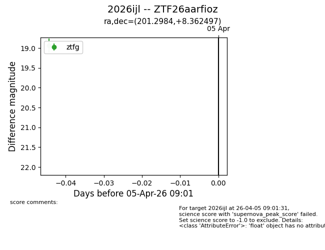
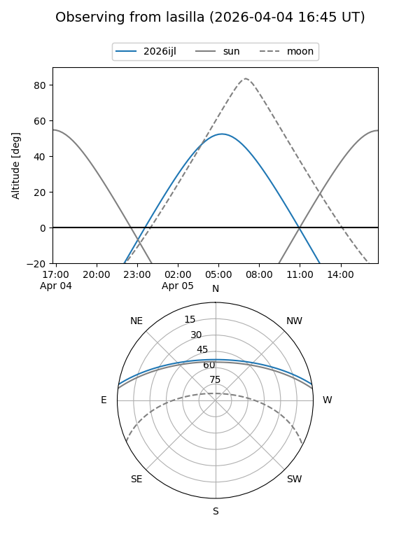
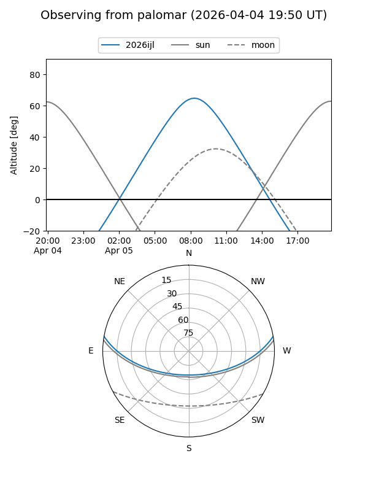
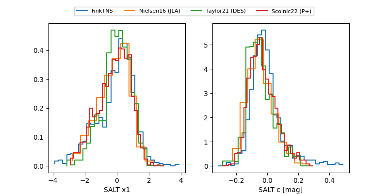

2026ijl
Target 2026ijl at 2026-04-05 09:05
Aliases and brokers:
FINK: link
Lasair: link
ALeRCE: link
TNS: link
YSE: link
alt names
ZTF26aarfioz (ztf,fink_ztf)
2026ijl (tns,yse)
Coordinates:
equatorial (ra, dec) = 201.2984,+8.36250
equatorial (HMS+DMS) = 13:25:11.62,+08:21:44.99
galactic (l, b) = (327.5537,+69.60429)
Flags:
Photometry:
last ztfg=18.93
1 ztfg detections
Lightcurve

Visibility


Additional plots
